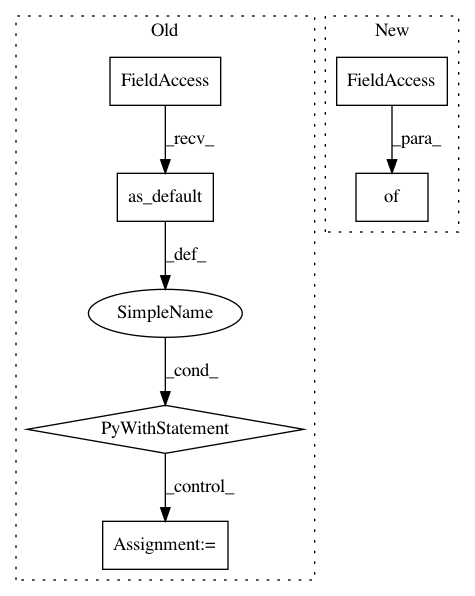

204b4cad88ff526006e2fa2c6604c35902cf5aef,tensorflow_transform/analyzers.py,_QuantilesCombinerSpec,add_input,#_QuantilesCombinerSpec#Any#Any#,723
Before Change
// to (1,?).
flattened_input = np.reshape(next_input[0], newshape=(1, -1))
with self._session.graph.as_default():
update = self._qaccumulator.add_summary(
stamp_token=self._stamp_token,
column=flattened_input,
// All weights are equal, and the weight vector is the
// same length as the input.
example_weights=np.ones_like(flattened_input))
if summary is not self._empty_summary:
self._session.run(
self._qaccumulator.add_prebuilt_summary(
stamp_token=self._stamp_token,
summary=tf.constant(summary)))
self._session.run(update)
// After the flush_summary, qaccumulator will not contain any
// uncommitted information that represents the input. Instead all the
// digested information is returned as "summary". Many such summaries
// will be combined by merge_accumulators().
return self._session.run(
self._qaccumulator.flush_summary(
stamp_token=self._stamp_token,
next_stamp_token=self._stamp_token))
def merge_accumulators(self, summaries):
if summaries is self._empty_summary:
return self._empty_summary
After Change
self._session.run(
self._add_prebuilt_summary_op,
feed_dict={self._prebuilt_summary_input: summary})
self._session.run(
self._add_summary_op,
In pattern: SUPERPATTERN
Frequency: 3
Non-data size: 6
Instances
Project Name: tensorflow/transform
Commit Name: 204b4cad88ff526006e2fa2c6604c35902cf5aef
Time: 2018-05-15
Author: tf-transform-dev@google.com
File Name: tensorflow_transform/analyzers.py
Class Name: _QuantilesCombinerSpec
Method Name: add_input
Project Name: tensorflow/transform
Commit Name: 204b4cad88ff526006e2fa2c6604c35902cf5aef
Time: 2018-05-15
Author: tf-transform-dev@google.com
File Name: tensorflow_transform/analyzers.py
Class Name: _QuantilesCombinerSpec
Method Name: extract_output
Project Name: HazyResearch/fonduer
Commit Name: c12f538d2d496f5e8f932abc1ee72a586b9ea855
Time: 2018-08-14
Author: senwu@cs.stanford.edu
File Name: fonduer/learning/disc_learning.py
Class Name: TFNoiseAwareModel
Method Name: save